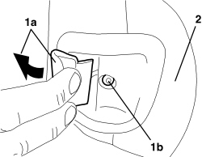
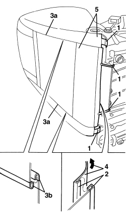
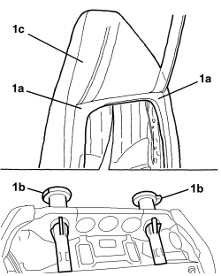
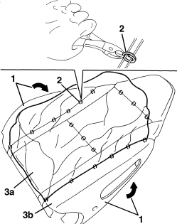
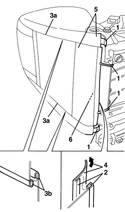

7045D31 FRONT SEAT BACKREST COVER, LEFT OR RIGHT - R.R. WITH SEAT REMOVED
- Path
- Procedures > 70 FITTINGS > 7045 FRONT SEATS > 7045D FRONT SEAT TRIM/PADDING > 7045D31 FRONT SEAT BACKREST COVER, LEFT OR RIGHT - R.R. WITH SEAT REMOVED
- Kind
- repair procedure (removal / refitting; the operation number is the code)
- Applies to
- all engines; all production periods
- Interactive page
- https://sloeber94.github.io/elrnDB-aBrrSpdr/en/#/946004158
Applies to: all engines; all production periods
 Removing
Removing
 Refitting
RefittingOp. 7045A25 FRONT SEAT BACKREST LUMBAR ADJUSTMENT KNOB (ONE), LEFT OR RIGHT - R.R.
1. Move backrest tilt lever (1a) and undo bolt (1b).
2. Remove the panel.

Applies to: all engines; all production periods
1. Disconnect the backrest trim rear retainers.
2. Disconnect the lower two ends of the backrest cover attached to one another.
3. Along the rear sections (3a), disconnect ends (3b) attached to one another.
4. Release the front end of the backrest trim from the cushion.
5. Raise the backrest trim as far as possible.

Applies to: all engines; all production periods
1. Insert hands under padding (1a) and release head restraint retainers (1b), then with the help of a second operator extract backrest trim with padding and head restraint (1c).

Applies to: all engines; all production periods
- If necessary, separate the backrest trim from the padding as described below.
1. Prise up the trim and release from the padding border.
2. Use cutters to cut all the front backrest trim retainers.
3. Separate trim (3a) from padding (3b).

Applies to: all engines; all production periods
Refitting
Removing- Observe the following precautions.
- Check that the airbag backrest trim identification mark is on the same side as the sidebag module.
- If a new backrest trim is being fitted, position the labels as described below.
- Remove the removable part of the adhesive label from the new backrest trim. Place a copy of label (1b) in a special folder containing the vehicle details (model, registration date, chassis number) and the serial number of the old backrest trim. The file should be kept for future checks.
- Fit the detachable part of the original label on the lower part of the seat, where similar labels for the seat and the sidebag module and the airbag wiring can already be found.
- If removed, position the backrest trim on the padding and crimp the retainers using special pliers.
- Fit the trim on the upper padding area.
- Position the padding on the seat frame and attach the head restraint pins to the appropriate bushes.
- Fully fit the backrest trim onto the padding.
- Connect the rear and lower ends of the backrest trim.
- Connect the backrest trim rear retainers.
- Move the backrest tilt lever and position the panel, then tighten the bolts.
Op. 7045A25 FRONT SEAT BACKREST LUMBAR ADJUSTMENT KNOB (ONE), LEFT OR RIGHT - R.R.
Applies to: all engines; all production periods; only with equipment: Electric seats
Removing
RefittingOp. 7045A25 FRONT SEAT BACKREST LUMBAR ADJUSTMENT KNOB (ONE), LEFT OR RIGHT - R.R.
1. Move backrest tilt lever (1a) and undo bolt (1b).
2. Remove the panel.

Applies to: all engines; all production periods; only with equipment: Electric seats
1. Disconnect the backrest trim rear retainers.
2. Disconnect the lower two ends of the backrest trim attached to one another.
3. Along rear sections (3a), disconnect ends (3b) attached to one another.
4. Release the front end of the backrest trim from the cushion.
5. Raise the backrest trim as far as possible.
6. Detach the electrical connection for the backrest heater pad.

Applies to: all engines; all production periods; only with equipment: Electric seats
1. Insert hands under padding (1a) and release head restraint retainers (1b). Then, with the help of a second operator, extract the backrest trim with padding and head restraint (1c).

Applies to: all engines; all production periods; only with equipment: Electric seats
- If necessary, separate the backrest trim from the padding as described below.
1. Prise up the trim by releasing it from the padding edge.
2. Use cutters to cut all the front backrest trim retainers.
3. Separate trim (3a) from padding with head restraint(3b).

Applies to: all engines; all production periods; only with equipment: Electric seats
Refitting
Removing- Observe the following precautions.
- Check that the airbag backrest trim identification mark is on the same side as the sidebag module.
- If a new backrest trim is being fitted, position the labels as described below.
- Remove the removable part of the adhesive label from the new backrest trim. Place a copy of the label in a special folder containing the vehicle details (model, registration date, chassis number) and the serial number of the old backrest trim. The file should be kept for future checks.
- Fit the detachable part of the original label on the lower part of the seat, where similar labels for the seat and the sidebag module and the airbag wiring can already be found.
- If removed, position the backrest trim on the padding and crimp the retainers using special pliers.
- Fit the trim on the upper padding area.
- Position the padding on the seat frame and attach the head restraint pins to the appropriate bushes.
- Secure the electrical connection for the backrest heater pad.
- Fully fit the backrest trim onto the padding.
- Connect the rear and lower ends of the backrest trim.
- Connect the backrest trim rear retainers.
- Move the backrest tilt lever and position the panel, then tighten the bolts.
Op. 7045A25 FRONT SEAT BACKREST LUMBAR ADJUSTMENT KNOB (ONE), LEFT OR RIGHT - R.R.
- After refitting the seat, connect the battery and use the Examiner to check that the system has not acquired any errors during the procedure.
Topics linked from this page (2)
Topics that link to this page (8)
- 5580C44 FRONT SIDE BAG MODULE (ONE) LH OR RH - R.R
- 5580C86 SIDE BAG CABLE LOOM (ONE) LH OR RH - R.R OR REPLACE
- 7045A38 DRIVER'S SEAT BACKREST LUMBAR ADJUSTMENT DEVICE - R.R WITH SEAT REMOVED
- 7045A86 FRONT SEAT FRAME (ONE), LEFT OR RIGHT, R.R.
- 7045A87 FRONT SEAT BACKREST FOLDING DEVICE WITH FLEXIBLE CABLES, LEFT OR RIGHT - R.R. WITH FRONT SEAT REMOVED
- 7045B06 GUIDE BUSH FOR FRONT SEAT HEAD RESTRAINT (ONE), LEFT OR RIGHT - R.R.
- 7045D30 FRONT SEAT BACKREST COVER, LEFT OR RIGHT - R.R.
- 7045M26 FRONT SEAT BACKREST HEATER PAD, LEFT OR RIGHT - R.R. FOLLOWING ELECTRICAL CIRCUIT CHECK